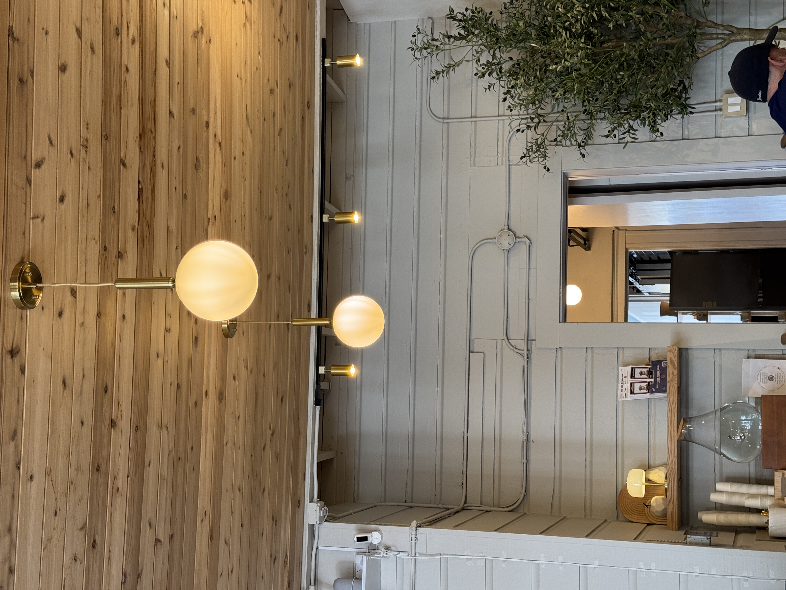

About Sweet Glory SF
Our Story
Sweet Glory SF was born from a passion for handcrafted, Asian-inspired desserts made with care and creativity.
Starting as a small bakery in San Francisco, we’ve grown into a local favorite known for layered crepe cakes, basque cheesecakes, and seasonal specialty desserts.
Every dessert is thoughtfully made using quality ingredients, traditional techniques, and modern flavors that bring people together.
Whether you’re celebrating a special occasion or simply enjoying a sweet treat, our goal is to create desserts that feel memorable, comforting, and joyful.
